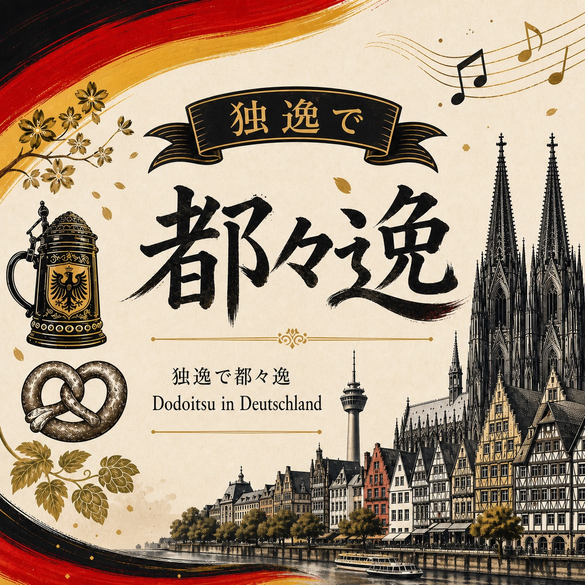
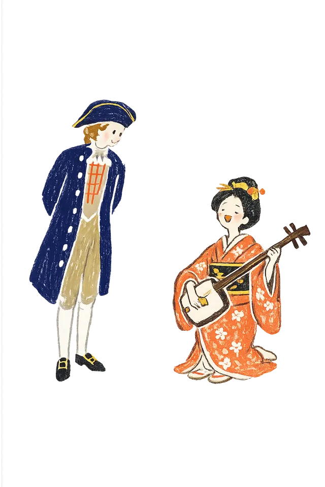

Dodoitsu in Deutschland
Heute Abend führen wir Sie nach Japan in den 1850er Jahren.
Zur Shamisen gesungen: Liebe, Sehnsucht und Gefühle im Rhythmus 7・7・7・5.
今宵ご案内いたしますは、1850年代の日本。独逸で聴く、七・七・七・五の流行り唄、都々逸でございます。

Ein kurzer Klang
Dodoitsu by Maya Yamao
A short introduction to Dodoitsu with shamisen and voice.
三味線と声で聴く、都々逸の短いイントロダクション。
Dodoitsu
Ein kurzes japanisches Lied im Rhythmus 7・7・7・5.
In den 1850er Jahren wurde es in Japan populär. Menschen sangen Liebe, Sehnsucht, Humor und Gefühle des Alltags in wenigen Worten, begleitet von der Shamisen.
Es war keine lange Geschichte, sondern ein kurzer musikalischer Moment: nah am Publikum, leicht zu merken und leicht weiterzugeben.
都々逸は、七・七・七・五のリズムでうたう日本の短い歌です。1850年代の日本で親しまれ、恋や想い、ユーモア、日々の気持ちを、少ない言葉にして三味線の音にのせました。
Shamisen
Drei Saiten, ein klarer rhythmischer Klang.
Die Shamisen ist ein traditionelles japanisches Saiteninstrument mit drei Saiten.
Sie wird mit einem großen Plektrum gespielt und hat einen klaren, rhythmischen Klang. In Dodoitsu begleitet die Shamisen nicht nur die Stimme. Sie gibt den Worten Rhythmus, Raum und Stimmung.
三味線は、三本の弦を持つ日本の伝統的な弦楽器です。都々逸では、声に寄り添うだけでなく、言葉にリズムと間、空気を与えます。
Warum so kurz?
Dodoitsu ist kurz, weil es für den Moment gemacht ist.
Vier kurze Zeilen kommen schnell an. Sie bleiben im Ohr. Sie lassen Raum für das, was nicht ganz ausgesprochen wird.
So können wenige Worte viel Gefühl tragen.
都々逸が短いのは、その場で届くためです。四つの短いフレーズだから耳に入り、余白が生まれ、少ない言葉にたくさんの想いをのせられます。
1850er Jahre
Vielleicht ein wenig wie ein kurzer Clip oder ein Meme.
Nicht oberflächlich, sondern stark, weil es schnell im Kopf und im Herzen ankommt.
今の感覚でたとえるなら、都々逸は少しだけショート動画やミームに似ています。短くて、耳に残って、人から人へ広がる。短いからこそ、頭にも心にもすっと届くのです。
Heute hören
Sie müssen kein Dodoitsu schreiben.
Sie müssen nicht jedes japanische Wort verstehen. Hören Sie einfach:
- die Shamisen 三味線の音
- den Rhythmus 言葉のリズム
- die Pausen 間
- die Stimme 声
- und den Nachklang 余韻
Dodoitsu ist kurz. Aber in diesem kurzen Lied kann ein ganzer Moment leben.
都々逸を作らなくても、日本語をすべて理解しなくても大丈夫です。ただ、音と間と余韻を聴いてみてください。
In Deutschland
Heute Abend begegnet Dodoitsu neuen Klängen.
Heute Abend begegnet Dodoitsu der Shamisen, dem Saxophon, dem Klavier und der Welt des Heike Monogatari.
Ein populäres Lied aus Japan in den 1850er Jahren erklingt hier in Deutschland in einer neuen Atmosphäre.
Nicht wie in einem Museum. Sondern als Klang, Rhythmus und Gefühl, in diesem Moment.
今宵、都々逸は三味線、サックス、ピアノ、そして平家物語の世界と出会います。博物館のように眺めるのではなく、音、リズム、想いとして、この場で味わう時間です。
Maya Yamao
Durch diesen Dodoitsu-Moment führt Maya Yamao.
Sie bringt traditionelle japanische Klänge und Worte in neue Räume, neue Begegnungen und neue musikalische Momente.
Profile, Videos, Social Media und Musik finden Sie hier.
この都々逸の時間へ案内するのは、三味線奏者・山尾麻耶。プロフィール、演奏動画、SNS、音源はこちらから。
Maya Yamao Profile / Music / SNS 山尾麻耶 プロフィール・音源・SNS